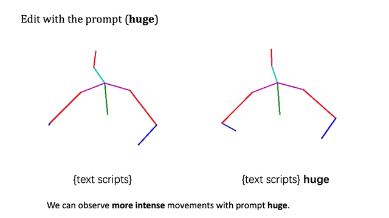

|
 |
| *Equal contribution. †Corresponding author. | |
 |
CAMDM: Taming Diffusion Probabilistic Models for Character Control
Rui Chen*, Mingyi Shi*, Shaoli Huang, Ping Tan, Taku Komura, Xuelin Chen† ACM SIGGRAPH 2024 Featured in SIGGRAPH 2024 Technical Papers Trailer! Presented in SIGGRAPH 2024 Emerging Technologies! Press release: [@SIGGRAPH] [@PR Newswire] [@公众号-腾讯AI实验室] [Project Page] |
 |
SweetDreamer: Aligning Geometric Priors in 2D Diffusion for Consistent Text-to-3D
Weiyu Li, Rui Chen, Xuelin Chen†, Ping Tan† International Conference on Learning Representations (ICLR) 2024 Press release: [@机器之心] [Project Page] |
 |
C·ASE: Learning Conditional Adversarial Skill Embeddings for Physics-based Characters
Zhiyang Dou, Xuelin Chen†, Qingnan Fan, Taku Komura, Wenping Wang, ACM SIGGRAPH Asia 2023 [Project Page] |
 |
Scene-aware Activity Program Generation with Language Guidance
Zejia Su, Qingnan Fan, Xuelin Chen, Oliver van Kaick, Hui Huang, Ruizhen Hu, ACM Transactions on Graphics (SIGGRAPH Asia 2023) [Project Page] |
 |
GenMM: Example-based Motion Synthesis via Generative Motion Matching
Weiyu Li*, Xuelin Chen*†, Peizhuo Li, Olga Sorkine-Hornung, Baoquan Chen ACM Transactions on Graphics (SIGGRAPH 2023) First SIGGRAPH (ACM Transactions on Graphics) in the history of Tencent AI lab! Invited to be presented at SIGGRAPH 2023 Labs Demo! [Project Page] |
|
 |
LivelySpeaker: Towards Semantic-aware Co-speech Gesture Generation
Yihao Zhi*, Xiaodong Cun*, Xuelin Chen, Xi Shen, Wen Guo, Shaoli Huang, Shenghua Gao IEEE International Conference on Computer Vision (ICCV) 2023 [Project Page] |
 |
Patch-based 3D Natural Scene Generation from a Single Example
Weiyu Li*, Xuelin Chen*†, Jue Wang, Baoquan Chen IEEE Conference on Computer Vision and Pattern Recognition (CVPR) 2023 Press release: [@机器之心] [Project Page] |
 |
3D-aware Object Goal Navigation via Simultaneous Exploration and Identification
Jiazhao Zhang*, Liu Dai*, Fanpeng Meng, Qingnan Fan, Xuelin Chen, Kai Xu, He Wang IEEE Conference on Computer Vision and Pattern Recognition (CVPR) 2023 [Project Page] |
 |
SinGRAV: Learning a Generative Radiance Volume from a Single Natural Scene
Yujie Wang, Xuelin Chen, Baoquan Chen Computer Graphics International (CGI) 2023 Journal of Computer Science and Technology (JCST) 2024 [Project Page] |
 |
VAT-Mart: Learning Visual Action Trajectory Proposals for Manipulating 3D ARTiculated Objects
Ruihai Wu*, Yan Zhao*, Kaichun Mo*, Zizheng Guo, Yian Wang, Tianhao Wu, Qingnan Fan, Xuelin Chen, Leonidas Guibas, Hao Dong International Conference on Learning Representations (ICLR) 2022 [Project Page] |
 |
MoCo-Flow: Neural Motion Consensus Flow for Dynamic Humans in Stationary Monocular Cameras
Xuelin Chen, Weiyu Li, Daniel Cohen-Or, Niloy J. Mitra, Baoquan Chen Computer Graphics Forum (Eurographics 2022) [Project Page] |
|
|
Towards a Neural Graphics Pipeline for Controllable Image Generation
Xuelin Chen, Daniel Cohen-Or, Baoquan Chen, Niloy J. Mitra Computer Graphics Forum (Eurographics 2021) [Project Page] |
 |
Multimodal Shape Completion via Conditional Generative Adversarial Networks
Rundi Wu*, Xuelin Chen*, Yixin Zhuang, Baoquan Chen European Conference on Computer Vision (ECCV) 2020, spotlight presentation [Project Page] |
|
|
Unpaired Point Cloud Completion on Real Scans Using Adversarial Training
Xuelin Chen, Baoquan Chen, Niloy J. Mitra International Conference on Learning Representations (ICLR) 2020 Paper Code |
 |
3D Fabrication with Universal Building Blocks and Pyramidal Shells
Xuelin Chen*, Honghua Li*, Chi-Wing Fu, Hao (Richard) Zhang, Daniel Cohen-Or, Baoquan Chen ACM Transactions on Graphics (SIGGRAPH Asia 2018) [Project Page] |
|
|
Dapper: Decompose-and-Pack for 3D Printing
Xuelin Chen, Hao Zhang, Jinjie Lin, Ruizhen Hu, Lin Lu, Qixing Huang, Bedrich Benes, Daniel Cohen-Or, Baoquan Chen ACM Transactions on Graphics (SIGGRAPH Asia 2015) [Project Page] |
|
|
Build-to-Last: Strength to Weight 3D Printed Objects
Lin Lu, Andrei Sharf, Haisen Zhao, Yuan Wei, Qingnan Fan, Xuelin Chen, Yann Savoye, Changhe Tu, Daniel Cohen-Or, Baoquan Chen ACM Transactions on Graphics (SIGGRAPH 2014) [Project Page] |
©Xuelin Chen. Last update: October, 2024.